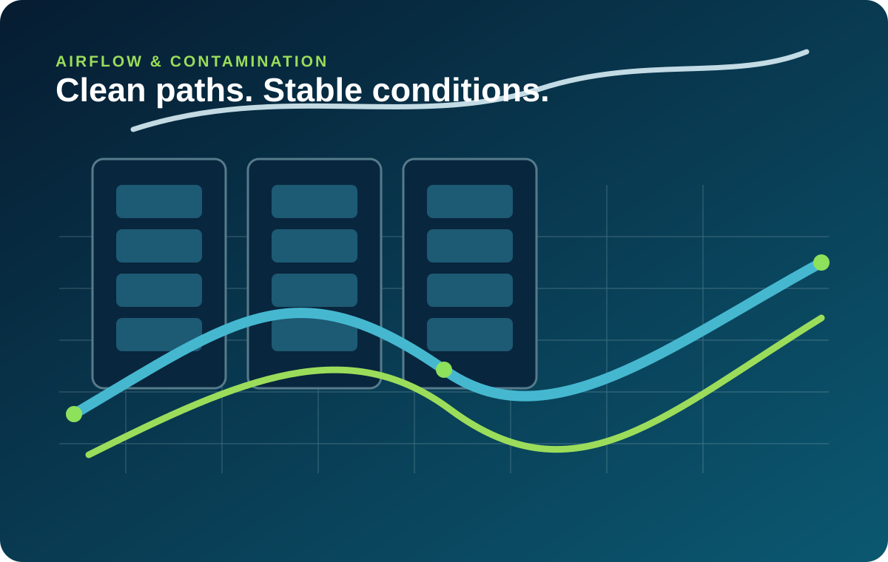
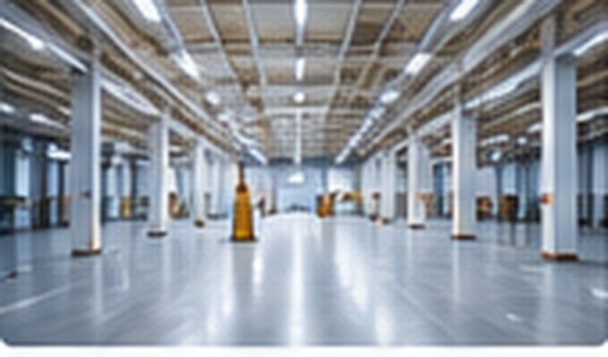

Data Centres
Server rooms and data halls where uptime, cleanliness and equipment protection matter.
Cleaning designed around how data centres, network rooms, telecom spaces and commissioning areas actually operate.
We adapt access, equipment, work sequencing and documentation to the environment instead of forcing one generic approach.
Server rooms and data halls where uptime, cleanliness and equipment protection matter.

Underfloor areas, pedestals and airflow pathways requiring low-particulate cleaning.

Technical rooms, corridors and support environments connected to critical infrastructure.
Every assignment starts with understanding the facility, its access rules, operational sensitivity and cleaning objective. The scope is then sequenced around the people, equipment and timing constraints of the site.
Cleaning methods change with the environment, but the discipline stays constant.
Clear service zones help facility teams understand what is included and how each area is treated.
External surfaces, aisle floors and technical-adjacent areas cleaned with controlled methods.
Raised-floor and pedestal areas cleaned to support cleaner airflow paths.
Post-construction cleaning that supports final detailing and handover.